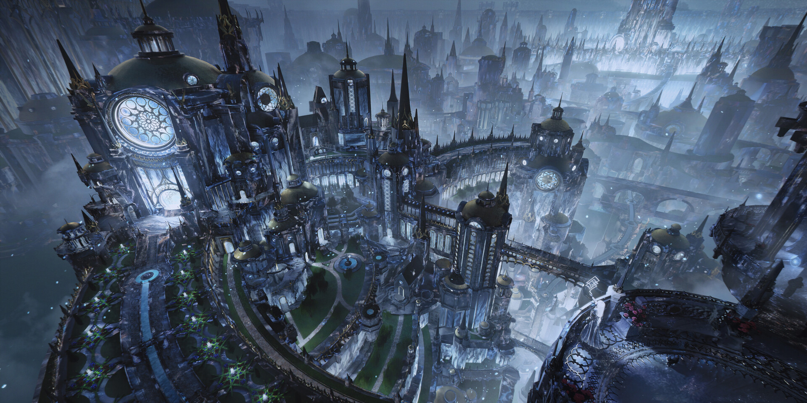

SEL
Sel, also known as Seol, is a relatively large planet, home to diverse landscapes and grand civilizations, which include at least three empires.
The planet is rich with powerful magic, formed and founded by the culture of its people. The structure of the land itself is important to its magic, placing major importance on certain symbols and structures.

SELISH SYSTEM
The Selish system is the name given to the planetary system containing the planet of Sel. The system also contains three other planets, with an additional unnamed dwarf planet on the edge of the system.


INHABITANTS
The people of Sel are diverse and plentiful. In the kingdom of Arelon, the inhabitants are urban and made up of mostly merchants, with a society built around trade, nobility, and a sense reverence for the ruined city of Elantris.
To the east, Fjorden is home to a more military centric society. Fjordell values discipline, unity, and authority, led by a powerful priesthood known as the Dakhor.
AONDOR
The Dor, a mysterious energy source that lies beneath Sel's surface, powers AonDor, the main magic system of Sel. Elantrians use this power by conjuring and drawing symbols called Aons. Drawing the Aons correctly enables the user to cast different types of powers like healing, teleportation, and many more.
However, AonDor is deeply tied to the geography of Sel. The symbols must reflect the shape and structure of Elantris, and even slight changes to the shape can disrupt their effectiveness.